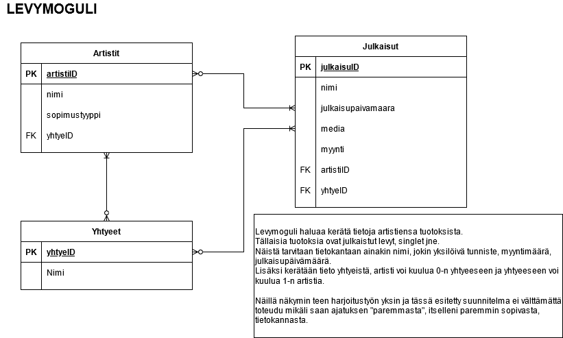
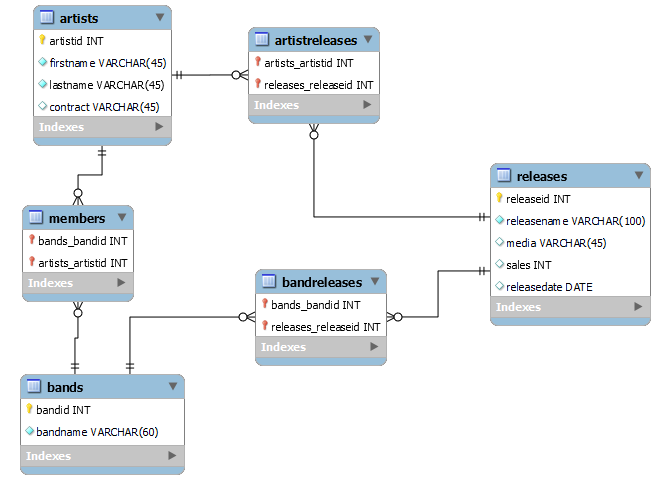
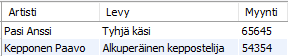
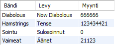
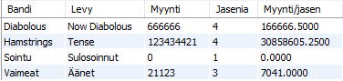
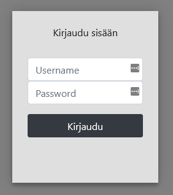

Päätin tehdä harjoitustyön yksin, lähinnä koska kurssin deadline lähestyi uhkaavasti ja en ollut varma onko minulla lopulta aikaa tehdä koko hommaa. Kyseessä on jonkinlainen tietokanta levymogulille artistien ja bändien julkaisuiden seuraamiselle. Koska henkilökohtaista kokemusta ko. maailmasta ei juuri ole niin kerättävät tiedot perustuu mielikuvitukseen tai ajatukseen siitä, mitä nämä tiedot voisi osittain olla.
Suunnitelma lähti liikkeellä kurssin yhdestä harjoitustehtävissä. Tein siis ajatuksen pohjalta käsitemallin ja sen pohjalta ensimmäisen EER-kaavion.
Kevyehkön suunnitelman pohjalta aloin toteuttamaan tietokantaa MySQL Workbenchin EER Diagram työkalulla. Tässä vaiheessa ajatus tietokantaratkaisusta hieman kirkastui ja alla työstämäni visualisointi, sekä sen pohjalta Forward Engineerin luoma skeeman ja taulujen luontisarja.
Kuten on nähtävissä tässä kohtaa moni moneen yhteydet on purettu ja saatu aikaiseksi kolme liitostaulua, joille keksin mielestäni kuvaat nimet (members, artistreleases, bandreleases).
Taulukko mielestäni rakenteeltaan hyvin salliva mutta vaatii käyttäjältä tämän vuoksi tarkkuutta. Tämä on perusteltavissa esimerkiksi kokoelmalevyjen julkaisuissa, jolloin useita artisteja tai bändejä voi saada rojalteja. Levymoguli voi omistaa myös 100% oikeuden julkaisuun jolloin artisteja tai bändejä ei tarvitse liittää julkaisuun. Toki tässä tapauksessa olisi varmasti järkevää julkaisuun jokin omistaja liittää..
sadas
SELECT * FROM ArtistSales;

SELECT * FROM BandSales;

SELECT * FROM BandSalesPerMember;

Päädyin tekemään käyttöliittymän NodeJS backendin kautta toimivaksi. Toteutus on MVC mallin mukainen ja perusta on luotu webistä löytyvää tutorialia hyödyntäen. Käyttöliittymän dokumentaatio löytyy alun linkeistä, Web-palvelinohjelmointi -kurssin harjoitustyönä.
Käyttöliittymän ensimmäisessä versiossa täysi CRUD toiminnallisuus on toteutettu ainoastaan yksittäiselle artistille.
Siirsin lokaalilta tietokantapalvelimelta luomani taulut ja näkymät DO tietokantapalvelimelle käyttäen MySQL Workbenchin Data migration wizardia. Siirto sujui melko mutkattomasti. Alempana mainittu mitä korjauksia piti manuaalisesti tehdä, jotta kaikki toimi siirron jälkeen.
Julkaisun yhteydessä tietokannan kohdalla tuli tiettyjä ongelmia vastaan, jotka korjasin ALTER TABLE loitsuilla mutta enpä tullut ottaneeksi niistä mitään muistiin. Tässä dokumentoinnissa CREATE TABLE loitsut muokattu vastaamaan tilannetta ALTER ajojen jälkeen. Olin siis rikkonut nimeämiskäytänteitä käyttämällä skandinaavisia ja erikoismerkkejä parissa kohdassa. Esim. nyt Bändi on Bandi ja myynti/jäsen on nyt osuus.
DO käyttöliittymästä piti käydä myös tietokannan määrityksiä muokkaamassa, koska se ei salli SQL mode muutoksia suoraan. Esim ONLY_FULL_GROUP_BY asetus piti muuttaa sieltä käsin.
Itse ohjelman julkaisusta enemmän Web-palvelinohjelmointi -kurssin harjoitustyön dokumentaatiossa.
Olen tyytyväinen siihen mitä sain harjoitustehtävässä aikaiseksi melko lyhyessä ajassa. Tietokannan rakenne ei ole optimaalinen mutta tässä tarkoituksessa vaikuttaisi toimivan. Opin harjoitustyötä tehdessä taas paljon lisää, myös kantapään kautta. Käyttöliittymän kannalta olen erittäin tyytyväinen siihen, että sain toimivan järjestelmän aikaiseksi. Tiukan ajan puitteissa paljon toimintoja jäi kuitenkin toteuttamatta, kuten esimerkiksi täysi CRUD toiminnallisuus myös bändeille ja julkaisuille sekä myyntidatan graafinen esittäminen.
Arvioisin omaksi harjoitustehtäväarvosanaksi 3.5